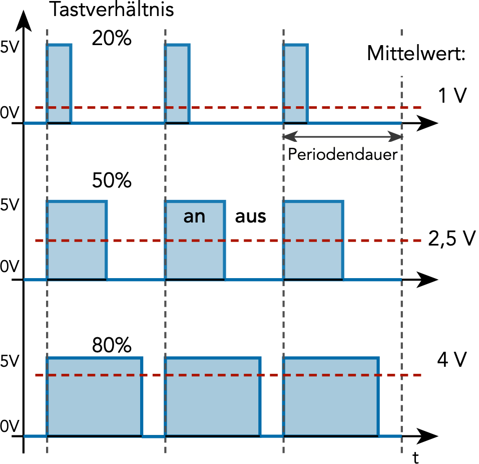

PWM Signale mit analogwrite()
Mit dem Arduino UNO (oder Leonard) ist es nur möglich eine Spannung von 0 V oder 5 V zu erzeugen. Ein analoges Signal mit beliebigen Spannungswerten (z.B. 4.3 V) kann nicht direkt ausgegeben werden. Trotzdem ist es möglich die Intensität einer LED oder die Drehgeschwindigkeit eines Gleichstrommotors zu steuern. Hiefür werden Signale mit Pulsweitenmodulation (PWM) verwendet.
Bei der Pulsweitenmodulation wird die Spannung abwechselnd an- und ausgeschaltet. Das Verhältnis zwischen der Anzeit \(t_\text{an}\) und der Periodendauer des Signals (also \( t_\text{an} + t_\text{aus} \) ) wird Tastverhältnis oder auch duty cycle genannt. Das Tastverhältnis kann nur Werte zwischen 0% und 100% annehmen (siehe folgende Abbildung).

Arduino
analogWrite(PWM_Pin, wert); // PWM-Signal
Dimmen einer LED
/* Dimmen einer LED mit einem PWM-Signal */
int ledRed = 9; // LED am PWM Pin (~9) (VORWIDERSTAND nicht vergessen)
void setup()
{
pinMode(ledRed, OUTPUT);
}
void loop()
{
/* Zum Ändern der LED Helligkeit wird ein PWM-Signal verwendet. Das Taktverhältnis des PWM-Signals
wird in einer for-Schleife langsam von 0 (0%) auf 255 (100%) erhöht und anschließend wieder reduziert. */
int helligkeit = 0
for (helligkeit; helligkeit <= 255; helligkeit++)
{
analogWrite(ledRed, helligkeit); // PWM Signal am LED Pin
delay(20);
}
for (helligkeit; helligkeit > 0; helligkeit--)
{
analogWrite(ledRed, helligkeit); // PWM Signal am LED Pin
delay(20);
}
}